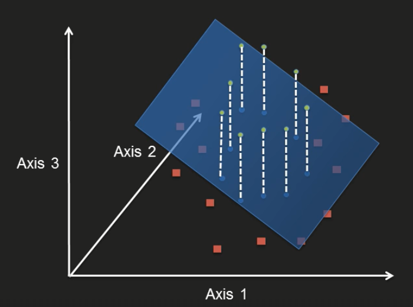

library(knitr)In the previous sections we got ourselves familiar with regression and classification algorithms and got a fair knowledge of using the caret package. In this section, we focus on more advanced concepts such as:
We are going to look at:
Lets consider a linearly separable case. Clearly, the points shown in the graph can be separated in 2 classes. From the 2 lines that separate correctly both classes, ideally the orange one is better, because it has some margin between both classes. If we were to choose the blue line, we could easily start misclassifying if a dot was slightly left or right from it’s original place.
The highlighted points that determine the width of the margin are called the support vectors.
What happen’s if we then have a non-linear case? Will SVM work? Well this is where SVM excels. Even if we wanted to create a linear model to separate the classes, it is nearly impossible to do so. SVM on the other hand, handles non-linear relationships quite well.
Without entering into much detail, we can explain SVM with a couple of concepts. In an SVM, the points are transformed using kernels, which allows the points to be projected in a higher dimensional space. By doing this, we can find a hyperplane that actually separates the points linearly!

We will be using the BreastCancer dataset from the mlbenc package. The goal for this logistic regression model will be to predict if the cases in the dataset are benign or not. In this case, the class, is the response variable, and the rest of the variables are factor variables.
library(caret)
library(kernlab)## Warning: package 'kernlab' was built under R version 3.4.1##
## Attaching package: 'kernlab'## The following object is masked from 'package:modeltools':
##
## prior## The following object is masked from 'package:psych':
##
## alpha## The following object is masked from 'package:ggplot2':
##
## alpha# Load data
data(segmentationData, package = "caret")
# Split data
set.seed(100)
trainRows = createDataPartition(segmentationData$Class, p = 0.7, list = FALSE)
trainData = segmentationData[trainRows, -c(1:2)]
testData = segmentationData[-trainRows, -c(1:2)]
str(trainData)## 'data.frame': 1414 obs. of 59 variables:
## $ Class : Factor w/ 2 levels "PS","WS": 1 1 2 1 1 2 2 2 2 2 ...
## $ AngleCh1 : num 143.25 133.75 106.65 69.15 2.89 ...
## $ AreaCh1 : int 185 819 431 298 285 172 177 495 424 256 ...
## $ AvgIntenCh1 : num 15.7 31.9 28 19.5 24.3 ...
## $ AvgIntenCh2 : num 4.95 206.88 116.32 102.29 112.42 ...
## $ AvgIntenCh3 : num 9.55 69.92 63.94 28.22 20.47 ...
## $ AvgIntenCh4 : num 2.21 164.15 106.7 31.03 40.58 ...
## $ ConvexHullAreaRatioCh1 : num 1.12 1.26 1.05 1.2 1.11 ...
## $ ConvexHullPerimRatioCh1: num 0.92 0.797 0.935 0.866 0.957 ...
## $ DiffIntenDensityCh1 : num 29.5 31.9 32.5 26.7 31.6 ...
## $ DiffIntenDensityCh3 : num 13.8 43.1 36 22.9 21.7 ...
## $ DiffIntenDensityCh4 : num 6.83 79.31 51.36 26.39 25.03 ...
## $ EntropyIntenCh1 : num 4.97 6.09 5.88 5.42 5.66 ...
## $ EntropyIntenCh3 : num 4.37 6.64 6.68 5.44 5.29 ...
## $ EntropyIntenCh4 : num 2.72 7.88 7.14 5.78 5.24 ...
## $ EqCircDiamCh1 : num 15.4 32.3 23.4 19.5 19.1 ...
## $ EqEllipseLWRCh1 : num 3.06 1.56 1.38 3.39 2.74 ...
## $ EqEllipseOblateVolCh1 : num 337 2233 802 725 608 ...
## $ EqEllipseProlateVolCh1 : num 110 1433 583 214 222 ...
## $ EqSphereAreaCh1 : num 742 3279 1727 1195 1140 ...
## $ EqSphereVolCh1 : num 1901 17654 6751 3884 3621 ...
## $ FiberAlign2Ch3 : num 1 1.49 1.3 1.22 1.49 ...
## $ FiberAlign2Ch4 : num 1 1.35 1.52 1.73 1.38 ...
## $ FiberLengthCh1 : num 27 64.3 21.1 43.1 34.7 ...
## $ FiberWidthCh1 : num 7.41 13.17 21.14 7.4 8.48 ...
## $ IntenCoocASMCh3 : num 0.01118 0.02805 0.00686 0.03096 0.02277 ...
## $ IntenCoocASMCh4 : num 0.05045 0.01259 0.00614 0.01103 0.07969 ...
## $ IntenCoocContrastCh3 : num 40.75 8.23 14.45 7.3 15.85 ...
## $ IntenCoocContrastCh4 : num 13.9 6.98 16.7 13.39 3.54 ...
## $ IntenCoocEntropyCh3 : num 7.2 6.82 7.58 6.31 6.78 ...
## $ IntenCoocEntropyCh4 : num 5.25 7.1 7.67 7.2 5.5 ...
## $ IntenCoocMaxCh3 : num 0.0774 0.1532 0.0284 0.1628 0.1274 ...
## $ IntenCoocMaxCh4 : num 0.172 0.0739 0.0232 0.0775 0.2785 ...
## $ KurtIntenCh1 : num -0.6567 -0.2488 -0.2935 0.6259 0.0421 ...
## $ KurtIntenCh3 : num -0.608 -0.331 1.051 0.128 0.952 ...
## $ KurtIntenCh4 : num 0.726 -0.265 0.151 -0.347 -0.195 ...
## $ LengthCh1 : num 26.2 47.2 28.1 37.9 36 ...
## $ NeighborAvgDistCh1 : num 370 174 158 206 205 ...
## $ NeighborMinDistCh1 : num 99.1 30.1 34.9 33.1 27 ...
## $ NeighborVarDistCh1 : num 128 81.4 90.4 116.9 111 ...
## $ PerimCh1 : num 68.8 154.9 84.6 101.1 86.5 ...
## $ ShapeBFRCh1 : num 0.665 0.54 0.724 0.589 0.6 ...
## $ ShapeLWRCh1 : num 2.46 1.47 1.33 2.83 2.73 ...
## $ ShapeP2ACh1 : num 1.88 2.26 1.27 2.55 2.02 ...
## $ SkewIntenCh1 : num 0.455 0.399 0.472 0.882 0.517 ...
## $ SkewIntenCh3 : num 0.46 0.62 0.971 1 1.177 ...
## $ SkewIntenCh4 : num 1.233 0.527 0.325 0.604 0.926 ...
## $ SpotFiberCountCh3 : int 1 4 2 4 1 1 0 1 1 0 ...
## $ SpotFiberCountCh4 : num 5 12 7 8 8 5 5 12 5 6 ...
## $ TotalIntenCh1 : int 2781 24964 11552 5545 6603 53779 43950 7593 70614 4613 ...
## $ TotalIntenCh2 : num 701 160998 47511 28870 30306 ...
## $ TotalIntenCh3 : int 1690 54675 26344 8042 5569 21234 20929 6488 15699 3332 ...
## $ TotalIntenCh4 : int 392 128368 43959 8843 11037 57231 46187 24325 51325 11466 ...
## $ VarIntenCh1 : num 12.5 18.8 17.3 13.8 15.4 ...
## $ VarIntenCh3 : num 7.61 56.72 37.67 30.01 20.5 ...
## $ VarIntenCh4 : num 2.71 118.39 49.47 24.75 45.45 ...
## $ WidthCh1 : num 10.6 32.2 21.2 13.4 13.2 ...
## $ XCentroid : int 42 215 371 487 283 191 180 236 473 211 ...
## $ YCentroid : int 14 347 252 295 159 127 138 467 15 495 ...summary(trainData)## Class AngleCh1 AreaCh1 AvgIntenCh1 AvgIntenCh2 AvgIntenCh3 AvgIntenCh4 ConvexHullAreaRatioCh1 ConvexHullPerimRatioCh1 DiffIntenDensityCh1 DiffIntenDensityCh3 DiffIntenDensityCh4 EntropyIntenCh1
## PS:910 Min. : 0.03184 Min. : 150.0 Min. : 15.16 Min. : 1.00 Min. : 0.12 Min. : 0.5633 Min. :1.006 Min. :0.5739 Min. : 26.73 Min. : 1.414 Min. : 2.307 Min. :4.708
## WS:504 1st Qu.: 53.23579 1st Qu.: 193.0 1st Qu.: 34.78 1st Qu.: 40.49 1st Qu.: 32.34 1st Qu.: 38.9881 1st Qu.:1.067 1st Qu.:0.8556 1st Qu.: 43.07 1st Qu.: 28.315 1st Qu.: 30.346 1st Qu.:6.012
## Median : 89.49738 Median : 257.0 Median : 60.97 Median :173.16 Median : 65.02 Median : 86.8951 Median :1.147 Median :0.9138 Median : 55.26 Median : 52.507 Median : 58.976 Median :6.550
## Mean : 89.89479 Mean : 324.3 Mean : 125.86 Mean :185.86 Mean : 92.57 Mean :135.1507 Mean :1.208 Mean :0.8954 Mean : 72.51 Mean : 72.087 Mean : 84.601 Mean :6.575
## 3rd Qu.:126.02889 3rd Qu.: 364.0 3rd Qu.: 141.47 3rd Qu.:277.25 3rd Qu.: 121.71 3rd Qu.:186.8667 3rd Qu.:1.284 3rd Qu.:0.9551 3rd Qu.: 80.40 3rd Qu.: 90.504 3rd Qu.:110.990 3rd Qu.:7.055
## Max. :179.86999 Max. :2186.0 Max. :1418.63 Max. :989.51 Max. :1205.51 Max. :864.1228 Max. :2.900 Max. :0.9965 Max. :355.02 Max. :470.690 Max. :531.347 Max. :9.476
## EntropyIntenCh3 EntropyIntenCh4 EqCircDiamCh1 EqEllipseLWRCh1 EqEllipseOblateVolCh1 EqEllipseProlateVolCh1 EqSphereAreaCh1 EqSphereVolCh1 FiberAlign2Ch3 FiberAlign2Ch4 FiberLengthCh1 FiberWidthCh1 IntenCoocASMCh3 IntenCoocASMCh4
## Min. :0.2167 Min. :0.3734 Min. :13.86 Min. : 1.013 Min. : 146.5 Min. : 64.01 Min. : 603.8 Min. : 1395 Min. :1.000 Min. :1.000 Min. : 11.87 Min. : 4.385 Min. :0.004588 Min. :0.004514
## 1st Qu.:4.5734 1st Qu.:4.6322 1st Qu.:15.71 1st Qu.: 1.408 1st Qu.: 280.9 1st Qu.: 150.44 1st Qu.: 775.7 1st Qu.: 2031 1st Qu.:1.288 1st Qu.:1.248 1st Qu.: 20.97 1st Qu.: 7.341 1st Qu.:0.009985 1st Qu.:0.018478
## Median :5.7971 Median :5.7629 Median :18.12 Median : 1.837 Median : 440.5 Median : 226.83 Median :1031.4 Median : 3115 Median :1.470 Median :1.454 Median : 29.80 Median : 9.601 Median :0.038059 Median :0.050515
## Mean :5.4619 Mean :5.4894 Mean :19.58 Mean : 2.114 Mean : 732.5 Mean : 368.71 Mean :1299.2 Mean : 5031 Mean :1.455 Mean :1.429 Mean : 35.03 Mean :10.268 Mean :0.099463 Mean :0.097376
## 3rd Qu.:6.5774 3rd Qu.:6.6170 3rd Qu.:21.55 3rd Qu.: 2.470 3rd Qu.: 797.5 3rd Qu.: 395.69 3rd Qu.:1459.1 3rd Qu.: 5241 3rd Qu.:1.644 3rd Qu.:1.622 3rd Qu.: 41.46 3rd Qu.:12.596 3rd Qu.:0.126166 3rd Qu.:0.114135
## Max. :7.9963 Max. :8.2733 Max. :52.76 Max. :11.312 Max. :11689.0 Max. :6314.82 Max. :8746.1 Max. :76912 Max. :2.000 Max. :2.000 Max. :220.23 Max. :33.171 Max. :0.936603 Max. :0.881854
## IntenCoocContrastCh3 IntenCoocContrastCh4 IntenCoocEntropyCh3 IntenCoocEntropyCh4 IntenCoocMaxCh3 IntenCoocMaxCh4 KurtIntenCh1 KurtIntenCh3 KurtIntenCh4 LengthCh1 NeighborAvgDistCh1 NeighborMinDistCh1 NeighborVarDistCh1
## Min. : 0.01627 Min. : 0.05305 Min. :0.2546 Min. :0.422 Min. :0.01435 Min. :0.01342 Min. :-1.37238 Min. :-1.3525 Min. :-1.5566 Min. : 14.90 Min. :152.1 Min. : 10.08 Min. : 57.34
## 1st Qu.: 4.32140 1st Qu.: 4.06487 1st Qu.:5.0231 1st Qu.:5.109 1st Qu.:0.05204 1st Qu.:0.11186 1st Qu.:-0.47974 1st Qu.: 0.1328 1st Qu.:-0.8229 1st Qu.: 22.20 1st Qu.:197.8 1st Qu.: 22.55 1st Qu.: 88.92
## Median : 8.64448 Median : 6.36712 Median :6.3543 Median :6.069 Median :0.18287 Median :0.21513 Median : 0.00013 Median : 1.4167 Median :-0.2874 Median : 27.52 Median :228.5 Median : 27.64 Median :107.79
## Mean : 9.98858 Mean : 7.95818 Mean :5.8924 Mean :5.748 Mean :0.23262 Mean :0.24772 Mean : 0.77060 Mean : 3.3482 Mean : 0.9464 Mean : 30.59 Mean :231.9 Mean : 29.44 Mean :105.48
## 3rd Qu.:13.76418 3rd Qu.: 9.86218 3rd Qu.:7.1094 3rd Qu.:6.792 3rd Qu.:0.35238 3rd Qu.:0.33736 3rd Qu.: 0.89943 3rd Qu.: 4.0602 3rd Qu.: 0.7358 3rd Qu.: 34.97 3rd Qu.:261.5 3rd Qu.: 33.80 3rd Qu.:121.72
## Max. :59.04388 Max. :61.55833 Max. :8.0684 Max. :8.071 Max. :0.96833 Max. :0.94037 Max. :41.39834 Max. :99.9808 Max. :82.7162 Max. :102.96 Max. :375.8 Max. :121.83 Max. :159.30
## PerimCh1 ShapeBFRCh1 ShapeLWRCh1 ShapeP2ACh1 SkewIntenCh1 SkewIntenCh3 SkewIntenCh4 SpotFiberCountCh3 SpotFiberCountCh4 TotalIntenCh1 TotalIntenCh2 TotalIntenCh3 TotalIntenCh4 VarIntenCh1
## Min. : 47.49 Min. :0.1944 Min. :1.002 Min. :1.010 Min. :-2.6657 Min. :-1.1136 Min. :-1.0044 Min. : 0.000 Min. : 1.000 Min. : 2382 Min. : 1 Min. : 24 Min. : 96 Min. : 11.79
## 1st Qu.: 64.31 1st Qu.:0.5303 1st Qu.:1.331 1st Qu.:1.381 1st Qu.: 0.2862 1st Qu.: 0.8156 1st Qu.: 0.4228 1st Qu.: 1.000 1st Qu.: 4.000 1st Qu.: 9355 1st Qu.: 11930 1st Qu.: 8224 1st Qu.: 9650 1st Qu.: 24.89
## Median : 78.17 Median :0.6017 Median :1.643 Median :1.781 Median : 0.6150 Median : 1.3102 Median : 0.7394 Median : 2.000 Median : 6.000 Median : 18046 Median : 49100 Median : 18207 Median : 24339 Median : 41.60
## Mean : 90.60 Mean :0.5948 Mean :1.812 Mean :2.056 Mean : 0.6867 Mean : 1.4954 Mean : 0.9332 Mean : 1.915 Mean : 6.898 Mean : 37775 Mean : 52269 Mean : 26036 Mean : 40040 Mean : 72.03
## 3rd Qu.:100.96 3rd Qu.:0.6709 3rd Qu.:2.065 3rd Qu.:2.399 3rd Qu.: 0.9753 3rd Qu.: 1.9398 3rd Qu.: 1.2250 3rd Qu.: 3.000 3rd Qu.: 8.000 3rd Qu.: 36770 3rd Qu.: 72796 3rd Qu.: 34612 3rd Qu.: 54929 3rd Qu.: 81.45
## Max. :459.77 Max. :0.8847 Max. :7.759 Max. :8.104 Max. : 5.8777 Max. : 9.6690 Max. : 8.0690 Max. :16.000 Max. :50.000 Max. :741411 Max. :363311 Max. :313433 Max. :519602 Max. :592.29
## VarIntenCh3 VarIntenCh4 WidthCh1 XCentroid YCentroid
## Min. : 0.8693 Min. : 2.44 Min. : 6.393 Min. : 9 Min. : 8.0
## 1st Qu.: 35.0512 1st Qu.: 45.91 1st Qu.:13.825 1st Qu.:142 1st Qu.: 86.0
## Median : 66.4803 Median : 85.20 Median :16.332 Median :267 Median :162.5
## Mean : 95.3171 Mean :116.99 Mean :17.712 Mean :261 Mean :176.8
## 3rd Qu.:118.4130 3rd Qu.:155.08 3rd Qu.:19.945 3rd Qu.:383 3rd Qu.:254.8
## Max. :757.0210 Max. :933.52 Max. :54.745 Max. :501 Max. :495.0head(trainData)## Class AngleCh1 AreaCh1 AvgIntenCh1 AvgIntenCh2 AvgIntenCh3 AvgIntenCh4 ConvexHullAreaRatioCh1 ConvexHullPerimRatioCh1 DiffIntenDensityCh1 DiffIntenDensityCh3 DiffIntenDensityCh4 EntropyIntenCh1 EntropyIntenCh3 EntropyIntenCh4 EqCircDiamCh1
## 1 PS 143.247705 185 15.71186 4.954802 9.548023 2.214689 1.124509 0.9196827 29.51923 13.77564 6.826923 4.969781 4.371017 2.718884 15.36954
## 2 PS 133.752037 819 31.92327 206.878517 69.916880 164.153453 1.263158 0.7970801 31.87500 43.12228 79.308424 6.087592 6.642761 7.880155 32.30558
## 3 WS 106.646387 431 28.03883 116.315534 63.941748 106.696602 1.053310 0.9354750 32.48771 35.98577 51.357050 5.883557 6.683000 7.144601 23.44892
## 4 PS 69.150325 298 19.45614 102.294737 28.217544 31.028070 1.202625 0.8658291 26.73228 22.91732 26.393701 5.420065 5.436732 5.778329 19.50279
## 5 PS 2.887837 285 24.27574 112.415441 20.474265 40.577206 1.109333 0.9568124 31.58065 21.70968 25.032258 5.658248 5.285671 5.235857 19.05279
## 6 WS 40.748298 172 325.93333 653.606061 128.690909 346.854545 1.005831 0.9926363 92.56291 61.92715 145.708609 6.998111 6.805538 7.119323 14.83940
## EqEllipseLWRCh1 EqEllipseOblateVolCh1 EqEllipseProlateVolCh1 EqSphereAreaCh1 EqSphereVolCh1 FiberAlign2Ch3 FiberAlign2Ch4 FiberLengthCh1 FiberWidthCh1 IntenCoocASMCh3 IntenCoocASMCh4 IntenCoocContrastCh3 IntenCoocContrastCh4 IntenCoocEntropyCh3
## 1 3.060676 336.9691 110.0963 742.1156 1900.996 1.000000 1.000000 26.98132 7.410365 0.011183899 0.050448005 40.751777 13.895439 7.199458
## 2 1.558394 2232.9055 1432.8246 3278.7256 17653.525 1.487935 1.352374 64.28230 13.167079 0.028051061 0.012594975 8.227953 6.984046 6.822138
## 3 1.375386 802.1945 583.2504 1727.4104 6750.985 1.300522 1.522316 21.14115 21.141150 0.006862315 0.006141691 14.446074 16.700843 7.580100
## 4 3.391220 724.7143 213.7031 1194.9320 3884.084 1.220424 1.733250 43.14112 7.404412 0.030962071 0.011033195 7.299457 13.390884 6.312641
## 5 2.741380 607.5185 221.6105 1140.4263 3621.385 1.491387 1.384547 34.74977 8.483574 0.022768411 0.079690842 15.854691 3.538895 6.778093
## 6 1.039726 176.7693 170.0153 691.8027 1710.989 1.309504 1.362191 12.38420 12.384199 0.008914083 0.009155300 8.248344 9.867550 7.016333
## IntenCoocEntropyCh4 IntenCoocMaxCh3 IntenCoocMaxCh4 KurtIntenCh1 KurtIntenCh3 KurtIntenCh4 LengthCh1 NeighborAvgDistCh1 NeighborMinDistCh1 NeighborVarDistCh1 PerimCh1 ShapeBFRCh1 ShapeLWRCh1 ShapeP2ACh1 SkewIntenCh1 SkewIntenCh3 SkewIntenCh4
## 1 5.249744 0.07741935 0.17197452 -0.65674409 -0.6080583 0.7258145 26.20779 370.4543 99.10349 127.96080 68.78338 0.6651480 2.462450 1.883006 0.4545048 0.4603934 1.2327736
## 2 7.098988 0.15321477 0.07387141 -0.24876907 -0.3307839 -0.2652638 47.21855 174.4442 30.11114 81.38063 154.89876 0.5397584 1.468181 2.255810 0.3987047 0.6197308 0.5272631
## 3 7.671478 0.02835052 0.02319588 -0.29348463 1.0512813 0.1506140 28.14303 158.4774 34.94477 90.43768 84.56460 0.7243116 1.328408 1.272193 0.4724871 0.9713788 0.3247065
## 4 7.197026 0.16279070 0.07751938 0.62585612 0.1277406 -0.3472936 37.85957 206.3344 33.08030 116.89276 101.09107 0.5891625 2.826854 2.545840 0.8816714 0.9998928 0.6044399
## 5 5.502166 0.12741313 0.27848101 0.04210684 0.9522900 -0.1954188 35.99415 204.9213 27.02935 110.96662 86.46670 0.6001347 2.727127 2.018155 0.5170272 1.1767534 0.9258123
## 6 6.967390 0.01986755 0.01986755 -0.19684137 -0.8607994 -0.4050669 16.20494 231.9933 15.92674 95.96952 49.53679 0.6869375 1.043013 1.086278 -0.7025953 0.1532023 0.6511667
## SpotFiberCountCh3 SpotFiberCountCh4 TotalIntenCh1 TotalIntenCh2 TotalIntenCh3 TotalIntenCh4 VarIntenCh1 VarIntenCh3 VarIntenCh4 WidthCh1 XCentroid YCentroid
## 1 1 5 2781 701 1690 392 12.47468 7.609035 2.71410 10.64297 42 14
## 2 4 12 24964 160998 54675 128368 18.80923 56.715352 118.38814 32.16126 215 347
## 3 2 7 11552 47511 26344 43959 17.29564 37.671053 49.47052 21.18553 371 252
## 4 4 8 5545 28870 8042 8843 13.81897 30.005643 24.74954 13.39283 487 295
## 5 1 8 6603 30306 5569 11037 15.40797 20.504288 45.45046 13.19856 283 159
## 6 1 5 53779 107681 21234 57231 115.00462 70.918444 184.69291 15.53666 191 127table(segmentationData$Class)##
## PS WS
## 1300 719# Since WS is half of PS, let's turn on downsampling in the trainControl caret method
ctrl = trainControl(method = "repeatedcv"
, repeats = 5
, summaryFunction = twoClassSummary
, classProbs = TRUE
, sampling = 'down')
# Define a tuning parameter grid - in this case only 1 tuning parameter (cost function)
grid = expand.grid(C = c(0.25, 0.5, 0.75, 1, 1.25, 1.5))
# Train and Tune the SVM
svmLinear = train(Class ~ ., data = trainData
, method = 'svmLinear'
, preProc = c('center','scale')
, metric = 'ROC'
, tuneGrid = grid
, trControl = ctrl)
svmLinear## Support Vector Machines with Linear Kernel
##
## 1414 samples
## 58 predictor
## 2 classes: 'PS', 'WS'
##
## Pre-processing: centered (58), scaled (58)
## Resampling: Cross-Validated (10 fold, repeated 5 times)
## Summary of sample sizes: 1273, 1272, 1272, 1272, 1273, 1273, ...
## Addtional sampling using down-sampling prior to pre-processing
##
## Resampling results across tuning parameters:
##
## C ROC Sens Spec
## 0.25 0.8891763 0.7920879 0.8393020
## 0.50 0.8863947 0.7971429 0.8365098
## 0.75 0.8873214 0.7898901 0.8377569
## 1.00 0.8868179 0.7907692 0.8381020
## 1.25 0.8865367 0.7918681 0.8412314
## 1.50 0.8829460 0.7887912 0.8412549
##
## ROC was used to select the optimal model using the largest value.
## The final value used for the model was C = 0.25.# Define a tuning parameter grid - in this case 2 tuning parameters (sigma and cost function)
grid = expand.grid(sigma = c(0.01, 0.015)
, C = c(0.25, 0.5, 0.75, 1, 1.25, 1.5))
# Train and Tune the SVM
svmRadial = train(Class ~ ., data = trainData
, method = 'svmRadial'
, preProc = c('center','scale')
, metric = 'ROC'
, tuneGrid = grid
, trControl = ctrl)
svmRadial## Support Vector Machines with Radial Basis Function Kernel
##
## 1414 samples
## 58 predictor
## 2 classes: 'PS', 'WS'
##
## Pre-processing: centered (58), scaled (58)
## Resampling: Cross-Validated (10 fold, repeated 5 times)
## Summary of sample sizes: 1272, 1273, 1273, 1273, 1272, 1273, ...
## Addtional sampling using down-sampling prior to pre-processing
##
## Resampling results across tuning parameters:
##
## sigma C ROC Sens Spec
## 0.010 0.25 0.8894925 0.7854945 0.8384078
## 0.010 0.50 0.8940707 0.7881319 0.8456235
## 0.010 0.75 0.8964788 0.7938462 0.8499451
## 0.010 1.00 0.8984267 0.7958242 0.8530902
## 0.010 1.25 0.8993582 0.7995604 0.8543294
## 0.010 1.50 0.8979496 0.7956044 0.8519059
## 0.015 0.25 0.8911516 0.7964835 0.8313333
## 0.015 0.50 0.8966338 0.7964835 0.8471843
## 0.015 0.75 0.8973428 0.7995604 0.8500157
## 0.015 1.00 0.8979410 0.7991209 0.8483765
## 0.015 1.25 0.8976477 0.8057143 0.8400000
## 0.015 1.50 0.8972755 0.8006593 0.8436157
##
## ROC was used to select the optimal model using the largest value.
## The final values used for the model were sigma = 0.01 and C = 1.25.# Define a tuning parameter grid - in this case 3 tuning parameters (degree, scale and cost function)
grid = expand.grid(scale = c(0.001, 0.01, 0.1)
, degree = c(1,2,3)
, C = c(0.25, 0.5, 0.75, 1, 1.25, 1.5))
# Train and Tune the SVM
svmPoly = train(Class ~ ., data = trainData
, method = 'svmPoly'
, preProc = c('center','scale')
, metric = 'ROC'
, tuneGrid = grid
, trControl = ctrl)
svmPoly## Support Vector Machines with Polynomial Kernel
##
## 1414 samples
## 58 predictor
## 2 classes: 'PS', 'WS'
##
## Pre-processing: centered (58), scaled (58)
## Resampling: Cross-Validated (10 fold, repeated 5 times)
## Summary of sample sizes: 1273, 1273, 1273, 1272, 1273, 1272, ...
## Addtional sampling using down-sampling prior to pre-processing
##
## Resampling results across tuning parameters:
##
## scale degree C ROC Sens Spec
## 0.001 1 0.25 0.8567991 0.7496703 0.8190275
## 0.001 1 0.50 0.8625501 0.7595604 0.8186667
## 0.001 1 0.75 0.8651123 0.7687912 0.8194118
## 0.001 1 1.00 0.8663022 0.7714286 0.8241882
## 0.001 1 1.25 0.8686707 0.7685714 0.8277569
## 0.001 1 1.50 0.8692541 0.7740659 0.8301725
## 0.001 2 0.25 0.8630955 0.7635165 0.8186431
## 0.001 2 0.50 0.8681190 0.7681319 0.8269255
## 0.001 2 0.75 0.8714390 0.7729670 0.8341255
## 0.001 2 1.00 0.8738332 0.7775824 0.8380706
## 0.001 2 1.25 0.8754243 0.7821978 0.8380627
## 0.001 2 1.50 0.8760407 0.7832967 0.8373176
## 0.001 3 0.25 0.8671647 0.7734066 0.8218118
## 0.001 3 0.50 0.8733316 0.7753846 0.8352706
## 0.001 3 0.75 0.8760902 0.7797802 0.8364863
## 0.001 3 1.00 0.8789717 0.7817582 0.8384627
## 0.001 3 1.25 0.8809279 0.7852747 0.8400706
## 0.001 3 1.50 0.8813589 0.7843956 0.8464314
## 0.010 1 0.25 0.8728359 0.7782418 0.8341098
## 0.010 1 0.50 0.8757624 0.7835165 0.8380627
## 0.010 1 0.75 0.8776010 0.7843956 0.8435922
## 0.010 1 1.00 0.8807377 0.7843956 0.8436157
## 0.010 1 1.25 0.8828793 0.7841758 0.8511608
## 0.010 1 1.50 0.8835541 0.7819780 0.8480078
## 0.010 2 0.25 0.8908995 0.7863736 0.8504078
## 0.010 2 0.50 0.8947204 0.7909890 0.8611137
## 0.010 2 0.75 0.8943166 0.7901099 0.8519529
## 0.010 2 1.00 0.8952480 0.7916484 0.8595529
## 0.010 2 1.25 0.8943061 0.7868132 0.8630824
## 0.010 2 1.50 0.8939023 0.7870330 0.8578980
## 0.010 3 0.25 0.8940215 0.7894505 0.8555686
## 0.010 3 0.50 0.8936802 0.7918681 0.8532000
## 0.010 3 0.75 0.8899644 0.7907692 0.8543451
## 0.010 3 1.00 0.8876350 0.7872527 0.8479843
## 0.010 3 1.25 0.8849398 0.7786813 0.8459922
## 0.010 3 1.50 0.8848181 0.7865934 0.8416706
## 0.100 1 0.25 0.8852964 0.7817582 0.8519843
## 0.100 1 0.50 0.8871821 0.7896703 0.8436706
## 0.100 1 0.75 0.8879138 0.7890110 0.8436627
## 0.100 1 1.00 0.8882144 0.7883516 0.8392471
## 0.100 1 1.25 0.8898980 0.7896703 0.8484078
## 0.100 1 1.50 0.8892733 0.7918681 0.8483765
## 0.100 2 0.25 0.8652271 0.7696703 0.8273961
## 0.100 2 0.50 0.8526888 0.7624176 0.8039608
## 0.100 2 0.75 0.8446838 0.7630769 0.7940235
## 0.100 2 1.00 0.8452598 0.7547253 0.8008078
## 0.100 2 1.25 0.8375531 0.7470330 0.7864471
## 0.100 2 1.50 0.8311528 0.7457143 0.7856235
## 0.100 3 0.25 0.8169855 0.7441758 0.7689961
## 0.100 3 0.50 0.8216477 0.7485714 0.7736235
## 0.100 3 0.75 0.8150236 0.7490110 0.7708314
## 0.100 3 1.00 0.8192766 0.7417582 0.7681020
## 0.100 3 1.25 0.8152222 0.7421978 0.7665647
## 0.100 3 1.50 0.8184899 0.7426374 0.7845020
##
## ROC was used to select the optimal model using the largest value.
## The final values used for the model were degree = 2, scale = 0.01 and C = 1.# Using resamples
comparisons = resamples(list(linear = svmLinear
, radial = svmRadial
, poly = svmPoly))# Plot it
bwplot(comparisons
, metric = "ROC"
, ylab = c('Linear','Radial','Polynomial'))It seems that the radial kernel has a bit of an advantage when measuring using ROC. Let’s use this Kernel to predict test data
# Predict data
pred = predict(svmRadial, testData)
caret::confusionMatrix(pred, testData$Class, positive = "WS")## Confusion Matrix and Statistics
##
## Reference
## Prediction PS WS
## PS 301 36
## WS 89 179
##
## Accuracy : 0.7934
## 95% CI : (0.7589, 0.825)
## No Information Rate : 0.6446
## P-Value [Acc > NIR] : 0.000000000000001077
##
## Kappa : 0.5727
## Mcnemar's Test P-Value : 0.000003302950592554
##
## Sensitivity : 0.8326
## Specificity : 0.7718
## Pos Pred Value : 0.6679
## Neg Pred Value : 0.8932
## Prevalence : 0.3554
## Detection Rate : 0.2959
## Detection Prevalence : 0.4430
## Balanced Accuracy : 0.8022
##
## 'Positive' Class : WS
## In this sectio we will understand:
A bootstrap is a random sample drawn with replacement (allows repetition). You repeat this process off choosing ramdon samples (bootstrapping). Bagging is just Bootstrap aggregation.
Since decision trees tend to be greedy and can give excesive importance to certian features, it is wise to build decision trees for a wide range of bootstrap samples. Additionally, we can also randomnly select a subset of features that we will use to split the data for each of those decision trees. Once you have grown the full forest of trees, typically we can take the mean or the majority class as our result prediction.
# trainControl object
ctrl = trainControl(method = "repeatedcv"
, repeats = 5
, summaryFunction = multiClassSummary
, classProbs = TRUE)
# grid
grid = expand.grid(mtry = c(2,8,15,20,30))
# Train
rf = train(Class ~ ., data = trainData
, method = "rf"
, preProc = c("center","scale")
, metric = "AUC"
, tuneGrid = grid
, trControl = ctrl)
rf## Random Forest
##
## 1414 samples
## 58 predictor
## 2 classes: 'PS', 'WS'
##
## Pre-processing: centered (58), scaled (58)
## Resampling: Cross-Validated (10 fold, repeated 5 times)
## Summary of sample sizes: 1272, 1273, 1273, 1273, 1273, 1272, ...
## Resampling results across tuning parameters:
##
## mtry logLoss AUC Accuracy Kappa F1 Sensitivity Specificity Pos_Pred_Value Neg_Pred_Value Detection_Rate Balanced_Accuracy
## 2 0.7803050 0.9051036 0.8349296 0.6346000 0.8740167 0.8896703 0.7360863 0.8597772 0.7889704 0.5725622 0.8128783
## 8 0.9028874 0.9075286 0.8363550 0.6395562 0.8743551 0.8852747 0.7480235 0.8645358 0.7852328 0.5697403 0.8166491
## 15 0.9130692 0.9069194 0.8353631 0.6382944 0.8732172 0.8815385 0.7520392 0.8658432 0.7806973 0.5673279 0.8167888
## 20 0.9266583 0.9061679 0.8316931 0.6310043 0.8700439 0.8760440 0.7516314 0.8649604 0.7727314 0.5638008 0.8138377
## 30 0.9349780 0.9035232 0.8299980 0.6282793 0.8683027 0.8718681 0.7544157 0.8656230 0.7677942 0.5611148 0.8131419
##
## AUC was used to select the optimal model using the largest value.
## The final value used for the model was mtry = 8.# trainControl object
prec = predict(rf, testData)
caret::confusionMatrix(pred, testData$Class)## Confusion Matrix and Statistics
##
## Reference
## Prediction PS WS
## PS 301 36
## WS 89 179
##
## Accuracy : 0.7934
## 95% CI : (0.7589, 0.825)
## No Information Rate : 0.6446
## P-Value [Acc > NIR] : 0.000000000000001077
##
## Kappa : 0.5727
## Mcnemar's Test P-Value : 0.000003302950592554
##
## Sensitivity : 0.7718
## Specificity : 0.8326
## Pos Pred Value : 0.8932
## Neg Pred Value : 0.6679
## Prevalence : 0.6446
## Detection Rate : 0.4975
## Detection Prevalence : 0.5570
## Balanced Accuracy : 0.8022
##
## 'Positive' Class : PS
## In this section we will look at:
The concept of boosting is based on the idea that several weak learnes can be combined to form a strong learner, thereby improving accuracy. In bagging, the samples are drawn independent of each other. Boosting works in a similar way, except that the trees are grown sequentially. Each tree tries to predict the error left over the by previous tree. This makes is practically impossible to paralellise (compared to random forests). The algorithm starts with
# Load dataset
data(Glass, package = "mlbench")
Glass$Type = make.names(Glass$Type)
# Train/test split
set.seed(100)
trainRows = createDataPartition(Glass$Type, p = 0.7, list = FALSE)
trainData = Glass[trainRows,]
testData = Glass[-trainRows,]
# MODEL PARAMETER LOOKUP
modelLookup('gbm')## model parameter label forReg forClass probModel
## 1 gbm n.trees # Boosting Iterations TRUE TRUE TRUE
## 2 gbm interaction.depth Max Tree Depth TRUE TRUE TRUE
## 3 gbm shrinkage Shrinkage TRUE TRUE TRUE
## 4 gbm n.minobsinnode Min. Terminal Node Size TRUE TRUE TRUE# Train control
ctrl = trainControl(method = "repeatedcv"
, number = 10
, repeats = 3
, classProbs = T)
# Set grid
gbmGrid = expand.grid(interaction.depth = c(1,2)
, n.trees = seq(100,1000, by = 400)
, shrinkage = c(0.01,0.1)
, n.minobsinnode = c(10, 30, 50))
# Build the model
gbmFit = train(Type ~ .
, data = trainData
, method = "gbm"
, metric = "Accuracy"
, trControl = ctrl
, tuneGrid = gbmGrid
, verbose = FALSE)## Loading required package: gbm## Loading required package: parallel## Loaded gbm 2.1.3# predictions
pred = predict(gbmFit, testData)
caret::confusionMatrix(pred, testData$Type) # accuracy is not bad and the confusion matrix seems pretty good.## Confusion Matrix and Statistics
##
## Reference
## Prediction X1 X2 X3 X5 X6 X7
## X1 15 2 3 0 0 0
## X2 3 18 1 1 0 0
## X3 3 1 1 0 0 0
## X5 0 1 0 2 0 0
## X6 0 0 0 0 2 0
## X7 0 0 0 0 0 8
##
## Overall Statistics
##
## Accuracy : 0.7541
## 95% CI : (0.6271, 0.8554)
## No Information Rate : 0.3607
## P-Value [Acc > NIR] : 0.0000000004418
##
## Kappa : 0.6602
## Mcnemar's Test P-Value : NA
##
## Statistics by Class:
##
## Class: X1 Class: X2 Class: X3 Class: X5 Class: X6 Class: X7
## Sensitivity 0.7143 0.8182 0.20000 0.66667 1.00000 1.0000
## Specificity 0.8750 0.8718 0.92857 0.98276 1.00000 1.0000
## Pos Pred Value 0.7500 0.7826 0.20000 0.66667 1.00000 1.0000
## Neg Pred Value 0.8537 0.8947 0.92857 0.98276 1.00000 1.0000
## Prevalence 0.3443 0.3607 0.08197 0.04918 0.03279 0.1311
## Detection Rate 0.2459 0.2951 0.01639 0.03279 0.03279 0.1311
## Detection Prevalence 0.3279 0.3770 0.08197 0.04918 0.03279 0.1311
## Balanced Accuracy 0.7946 0.8450 0.56429 0.82471 1.00000 1.0000# Load data
data(Sacramento, package = "caret")
trainRows = createDataPartition(Sacramento$price, p = 0.7, list = FALSE)
trainData = Sacramento[trainRows,]
testData = Sacramento[-trainRows,]
# trainControl
ctrl = trainControl(method = "repeatedcv"
, number = 10
, repeats = 3
, classProbs = F) #continuous variable does not need class probability
# gbm grid
gbmGrid = expand.grid(interaction.depth = c(1,2,3)
, n.trees = seq(100, 1000, by = 400)
, shrinkage = c(0.01, 0.1, 0.2)
, n.minobsinnode = c (5, 10, 20))
# model
gbmFit = train(price ~ .
, data = trainData
, method = "gbm"
, metric = "RMSE"
, trControl = ctrl
, tuneGrid = gbmGrid
, verbose = FALSE)# predictions
pred = predict(gbmFit, testData)
DMwR::regr.eval(testData$price, pred)## mae mse rmse mape
## 52944.6935293 5742615781.5878048 75780.0487040 0.2633823In this section we are going to cover how to deal with overfitting in regression models with techniques like ridge and lasso. We will learn:
The mean squared error and OLS regression is a combination of variance and bias. It is possible to reduce the mean square error further by allowing the parameter estimates to be biased. In addition to OLS regression, we add a penalty term to the \(\beta\) coefficient so that it shrinks. The \(\lambda\) is the shrinkage or regularization parameter: the larger the \(\lambda\), the influence of the predictor is reduced. The challenge is to find the best value of \(\lambda\). This can be of 2 types: Ridge and LASSO regression. The main difference between them is:
library(glmnet)## Loading required package: Matrix## Loading required package: foreach## foreach: simple, scalable parallel programming from Revolution Analytics
## Use Revolution R for scalability, fault tolerance and more.
## http://www.revolutionanalytics.com## Loaded glmnet 2.0-10library(caret)
options(scipen = 999)
# Define a not in function
'%ni%' = Negate('%in%')
# Read data
prostate = read.csv("https://goo.gl/qmrDcY")
# Split data
set.seed(100)
trainRows = createDataPartition(prostate$lpsa, p = 0.7, list = FALSE)
trainData = prostate[trainRows, ]
testData = prostate[-trainRows, ]
train_x = as.matrix(trainData[, colnames(trainData) %ni% 'lpsa'])
train_y = as.matrix(trainData[,'lpsa'])
test_x = as.matrix(testData[, colnames(testData) %ni% 'lpsa'])
test_y = as.matrix(testData[,'lpsa'])
# Setting up the lambda grid for regularization
grid = 10^seq(10,-2,length = 100)
# Build the model
ridgeMod = glmnet(train_x, train_y
, alpha = 0, lambda = grid, thresh = 1e-12) # when alpha = 0 -> ridge Regression, alpha = 1 -> LASSO regression.
ridgeMod##
## Call: glmnet(x = train_x, y = train_y, alpha = 0, lambda = grid, thresh = 0.000000000001)
##
## Df %Dev Lambda
## [1,] 8 0.0000000003436 10000000000.00000
## [2,] 8 0.0000000004542 7565000000.00000
## [3,] 8 0.0000000006004 5722000000.00000
## [4,] 8 0.0000000007937 4329000000.00000
## [5,] 8 0.0000000010490 3275000000.00000
## [6,] 8 0.0000000013870 2477000000.00000
## [7,] 8 0.0000000018340 1874000000.00000
## [8,] 8 0.0000000024240 1417000000.00000
## [9,] 8 0.0000000032040 1072000000.00000
## [10,] 8 0.0000000042360 811100000.00000
## [11,] 8 0.0000000055990 613600000.00000
## [12,] 8 0.0000000074020 464200000.00000
## [13,] 8 0.0000000097850 351100000.00000
## [14,] 8 0.0000000129400 265600000.00000
## [15,] 8 0.0000000171000 200900000.00000
## [16,] 8 0.0000000226000 152000000.00000
## [17,] 8 0.0000000298800 115000000.00000
## [18,] 8 0.0000000395000 86970000.00000
## [19,] 8 0.0000000522200 65790000.00000
## [20,] 8 0.0000000690300 49770000.00000
## [21,] 8 0.0000000912500 37650000.00000
## [22,] 8 0.0000001206000 28480000.00000
## [23,] 8 0.0000001595000 21540000.00000
## [24,] 8 0.0000002108000 16300000.00000
## [25,] 8 0.0000002787000 12330000.00000
## [26,] 8 0.0000003684000 9326000.00000
## [27,] 8 0.0000004870000 7055000.00000
## [28,] 8 0.0000006438000 5337000.00000
## [29,] 8 0.0000008510000 4037000.00000
## [30,] 8 0.0000011250000 3054000.00000
## [31,] 8 0.0000014870000 2310000.00000
## [32,] 8 0.0000019660000 1748000.00000
## [33,] 8 0.0000025990000 1322000.00000
## [34,] 8 0.0000034360000 1000000.00000
## [35,] 8 0.0000045420000 756500.00000
## [36,] 8 0.0000060040000 572200.00000
## [37,] 8 0.0000079370000 432900.00000
## [38,] 8 0.0000104900000 327500.00000
## [39,] 8 0.0000138700000 247700.00000
## [40,] 8 0.0000183300000 187400.00000
## [41,] 8 0.0000242400000 141700.00000
## [42,] 8 0.0000320400000 107200.00000
## [43,] 8 0.0000423500000 81110.00000
## [44,] 8 0.0000559900000 61360.00000
## [45,] 8 0.0000740100000 46420.00000
## [46,] 8 0.0000978300000 35110.00000
## [47,] 8 0.0001293000000 26560.00000
## [48,] 8 0.0001710000000 20090.00000
## [49,] 8 0.0002260000000 15200.00000
## [50,] 8 0.0002987000000 11500.00000
## [51,] 8 0.0003948000000 8697.00000
## [52,] 8 0.0005218000000 6579.00000
## [53,] 8 0.0006896000000 4977.00000
## [54,] 8 0.0009113000000 3765.00000
## [55,] 8 0.0012040000000 2848.00000
## [56,] 8 0.0015910000000 2154.00000
## [57,] 8 0.0021020000000 1630.00000
## [58,] 8 0.0027760000000 1233.00000
## [59,] 8 0.0036640000000 932.60000
## [60,] 8 0.0048360000000 705.50000
## [61,] 8 0.0063790000000 533.70000
## [62,] 8 0.0084070000000 403.70000
## [63,] 8 0.0110700000000 305.40000
## [64,] 8 0.0145600000000 231.00000
## [65,] 8 0.0191200000000 174.80000
## [66,] 8 0.0250500000000 132.20000
## [67,] 8 0.0327300000000 100.00000
## [68,] 8 0.0426200000000 75.65000
## [69,] 8 0.0552300000000 57.22000
## [70,] 8 0.0711700000000 43.29000
## [71,] 8 0.0910300000000 32.75000
## [72,] 8 0.1154000000000 24.77000
## [73,] 8 0.1446000000000 18.74000
## [74,] 8 0.1788000000000 14.17000
## [75,] 8 0.2176000000000 10.72000
## [76,] 8 0.2601000000000 8.11100
## [77,] 8 0.3051000000000 6.13600
## [78,] 8 0.3506000000000 4.64200
## [79,] 8 0.3948000000000 3.51100
## [80,] 8 0.4361000000000 2.65600
## [81,] 8 0.4734000000000 2.00900
## [82,] 8 0.5059000000000 1.52000
## [83,] 8 0.5338000000000 1.15000
## [84,] 8 0.5571000000000 0.86970
## [85,] 8 0.5764000000000 0.65790
## [86,] 8 0.5921000000000 0.49770
## [87,] 8 0.6047000000000 0.37650
## [88,] 8 0.6145000000000 0.28480
## [89,] 8 0.6220000000000 0.21540
## [90,] 8 0.6275000000000 0.16300
## [91,] 8 0.6314000000000 0.12330
## [92,] 8 0.6342000000000 0.09326
## [93,] 8 0.6360000000000 0.07055
## [94,] 8 0.6372000000000 0.05337
## [95,] 8 0.6380000000000 0.04037
## [96,] 8 0.6385000000000 0.03054
## [97,] 8 0.6388000000000 0.02310
## [98,] 8 0.6390000000000 0.01748
## [99,] 8 0.6391000000000 0.01322
## [100,] 8 0.6391000000000 0.01000What is the best model? We can also plot this:
# What is the best Lambda for the model?
cv.out = cv.glmnet(train_x, train_y, alpha = 0)
bestlam = cv.out$lambda.min
bestlam## [1] 0.1236591# Plots
plot(cv.out)# Prediction
pred = predict(ridgeMod, s = bestlam, newx = test_x)
DMwR::regr.eval(test_y, pred)## mae mse rmse mape
## 0.5825077 0.5960255 0.7720269 0.3355145Plotting the coefficients:
# Plotting more coefficients
coefs_ridge = predict(ridgeMod, type = "coefficients", s = bestlam)
coefs_ridge## 9 x 1 sparse Matrix of class "dgCMatrix"
## 1
## (Intercept) -0.6257781231
## lcavol 0.4078835589
## lweight 0.5257548852
## age -0.0209794903
## lbph 0.0911907580
## svi 0.6710940863
## lcp -0.0359468024
## gleason 0.2680435384
## pgg45 0.0007726643plot(ridgeMod, xvar = "lambda")lassoMod = glmnet(train_x, train_y, alpha = 1, lambda = grid, thresh = 1e-12)
cv.out = cv.glmnet(train_x, train_y, alpha = 1)
bestlam = cv.out$lambda.min
bestlam## [1] 0.03604729# plot
plot(cv.out)# predict
pred = predict(lassoMod, s = bestlam, newx = test_x)
DMwR::regr.eval(test_y, pred)## mae mse rmse mape
## 0.5687857 0.5636225 0.7507480 0.3309896# Coefficients
coefs_lasso = predict(lassoMod, type = "coefficients", s = bestlam)
coefs_lasso## 9 x 1 sparse Matrix of class "dgCMatrix"
## 1
## (Intercept) -0.36943832
## lcavol 0.44484157
## lweight 0.48570991
## age -0.01567643
## lbph 0.06731539
## svi 0.55296866
## lcp .
## gleason 0.20168021
## pgg45 .plot(lassoMod, xvar = "lambda")XGBoost is an algorithm that became popular amongst Kagglers for winning competitions. Internally, it uses the regularization techniques and boosted trees, 2 things that we have seen above. In this section we will understand:
# install.packages("drat", repos = "https://cran.rstudio.com")
# drat::addRepo("dmlc")
# install.packages(c("xgboost"
# ,"Ckmeans.1d.dp" # -> read for xgb.plot.importance
# ,"DiagrammeR") # -> read for xgb.plot.tree
# , repos = "https://cran.rstudio.com")
# Set up
library(caret)
library(xgboost)##
## Attaching package: 'xgboost'## The following object is masked from 'package:rattle':
##
## xgboost## The following object is masked from 'package:plotly':
##
## slicelibrary(Matrix)
options = (scipen = 999)
'%ni%' = Negate('%in%')
# Datasets
prostate = read.csv('https://goo.gl/qmrDcY')
set.seed(100)
trainRows = createDataPartition(prostate$lpsa, p = 0.7, list = FALSE)
trainData = prostate[trainRows,]
testData = prostate[-trainRows,]
# Creating the matrix for training model
trainData_xg = xgb.DMatrix(data.matrix(trainData[,colnames(trainData) %ni% 'lpsa']), label = as.numeric(trainData$lpsa))
testData_xg = xgb.DMatrix(data.matrix(trainData[,'lpsa']))
watchlist = list(train = trainData_xg, test = testData_xg)param = list("objective" = "reg:linear"
, "eval_metric" = "rmse")
cv.nround = 5
cv.nfold = 3
cvMod = xgb.cv(param = param
, data = trainData_xg
, nfold = cv.nfold
, nrounds = cv.nround)## [1] train-rmse:1.670175+0.043253 test-rmse:1.705604+0.169971
## [2] train-rmse:1.259324+0.030792 test-rmse:1.370629+0.200890
## [3] train-rmse:0.965684+0.018365 test-rmse:1.151858+0.185393
## [4] train-rmse:0.748368+0.017670 test-rmse:1.029120+0.162427
## [5] train-rmse:0.585005+0.016011 test-rmse:0.944185+0.139275cvMod## ##### xgb.cv 3-folds
## iter train_rmse_mean train_rmse_std test_rmse_mean test_rmse_std
## 1 1.6701753 0.04325292 1.705604 0.1699708
## 2 1.2593237 0.03079154 1.370629 0.2008904
## 3 0.9656837 0.01836527 1.151858 0.1853933
## 4 0.7483683 0.01766985 1.029120 0.1624274
## 5 0.5850047 0.01601073 0.944185 0.1392753# Train the XGBoost model
nrounds = 50
xgMod = xgb.train(param = param, data = trainData_xg, nrounds = nrounds, booster = "gblinear")
xgMod## ##### xgb.Booster
## raw: 424 bytes
## call:
## xgb.train(params = param, data = trainData_xg, nrounds = nrounds,
## booster = "gblinear")
## params (as set within xgb.train):
## objective = "reg:linear", eval_metric = "rmse", booster = "gblinear", silent = "1"
## xgb.attributes:
## niter
## callbacks:
## cb.print.evaluation(period = print_every_n)
## niter: 50# Predict
pred = predict(xgMod, testData_xg)
DMwR::regr.eval(testData$lpsa, pred)## mae mse rmse mape
## 2.955368 5.271755 2.296030 2.217699# training control parameters
xgb_trcontrol = trainControl(method = "cv"
, number = 5
, verboseIter = TRUE
, returnData = FALSE
, returnResamp = "all")
# Tuning parameters for xgbLinear
modelLookup('xgbLinear')## model parameter label forReg forClass probModel
## 1 xgbLinear nrounds # Boosting Iterations TRUE TRUE TRUE
## 2 xgbLinear lambda L2 Regularization TRUE TRUE TRUE
## 3 xgbLinear alpha L1 Regularization TRUE TRUE TRUE
## 4 xgbLinear eta Learning Rate TRUE TRUE TRUE# Tune the model
set.seed(100)
xgb_train = train(x = as.matrix(trainData[, colnames(trainData) %ni% "lpsa"])
, y = trainData$lpsa
, trControl = xgb_trcontrol
, tuneLength = 3
, method = "xgbLinear")## + Fold1: lambda=0.0000, alpha=0.0000, nrounds= 50, eta=0.3
## - Fold1: lambda=0.0000, alpha=0.0000, nrounds= 50, eta=0.3
## + Fold1: lambda=0.1000, alpha=0.0000, nrounds= 50, eta=0.3
## - Fold1: lambda=0.1000, alpha=0.0000, nrounds= 50, eta=0.3
## + Fold1: lambda=0.0001, alpha=0.0000, nrounds= 50, eta=0.3
## - Fold1: lambda=0.0001, alpha=0.0000, nrounds= 50, eta=0.3
## + Fold1: lambda=0.0000, alpha=0.1000, nrounds= 50, eta=0.3
## - Fold1: lambda=0.0000, alpha=0.1000, nrounds= 50, eta=0.3
## + Fold1: lambda=0.1000, alpha=0.1000, nrounds= 50, eta=0.3
## - Fold1: lambda=0.1000, alpha=0.1000, nrounds= 50, eta=0.3
## + Fold1: lambda=0.0001, alpha=0.1000, nrounds= 50, eta=0.3
## - Fold1: lambda=0.0001, alpha=0.1000, nrounds= 50, eta=0.3
## + Fold1: lambda=0.0000, alpha=0.0001, nrounds= 50, eta=0.3
## - Fold1: lambda=0.0000, alpha=0.0001, nrounds= 50, eta=0.3
## + Fold1: lambda=0.1000, alpha=0.0001, nrounds= 50, eta=0.3
## - Fold1: lambda=0.1000, alpha=0.0001, nrounds= 50, eta=0.3
## + Fold1: lambda=0.0001, alpha=0.0001, nrounds= 50, eta=0.3
## - Fold1: lambda=0.0001, alpha=0.0001, nrounds= 50, eta=0.3
## + Fold1: lambda=0.0000, alpha=0.0000, nrounds=100, eta=0.3
## - Fold1: lambda=0.0000, alpha=0.0000, nrounds=100, eta=0.3
## + Fold1: lambda=0.1000, alpha=0.0000, nrounds=100, eta=0.3
## - Fold1: lambda=0.1000, alpha=0.0000, nrounds=100, eta=0.3
## + Fold1: lambda=0.0001, alpha=0.0000, nrounds=100, eta=0.3
## - Fold1: lambda=0.0001, alpha=0.0000, nrounds=100, eta=0.3
## + Fold1: lambda=0.0000, alpha=0.1000, nrounds=100, eta=0.3
## - Fold1: lambda=0.0000, alpha=0.1000, nrounds=100, eta=0.3
## + Fold1: lambda=0.1000, alpha=0.1000, nrounds=100, eta=0.3
## - Fold1: lambda=0.1000, alpha=0.1000, nrounds=100, eta=0.3
## + Fold1: lambda=0.0001, alpha=0.1000, nrounds=100, eta=0.3
## - Fold1: lambda=0.0001, alpha=0.1000, nrounds=100, eta=0.3
## + Fold1: lambda=0.0000, alpha=0.0001, nrounds=100, eta=0.3
## - Fold1: lambda=0.0000, alpha=0.0001, nrounds=100, eta=0.3
## + Fold1: lambda=0.1000, alpha=0.0001, nrounds=100, eta=0.3
## - Fold1: lambda=0.1000, alpha=0.0001, nrounds=100, eta=0.3
## + Fold1: lambda=0.0001, alpha=0.0001, nrounds=100, eta=0.3
## - Fold1: lambda=0.0001, alpha=0.0001, nrounds=100, eta=0.3
## + Fold1: lambda=0.0000, alpha=0.0000, nrounds=150, eta=0.3
## - Fold1: lambda=0.0000, alpha=0.0000, nrounds=150, eta=0.3
## + Fold1: lambda=0.1000, alpha=0.0000, nrounds=150, eta=0.3
## - Fold1: lambda=0.1000, alpha=0.0000, nrounds=150, eta=0.3
## + Fold1: lambda=0.0001, alpha=0.0000, nrounds=150, eta=0.3
## - Fold1: lambda=0.0001, alpha=0.0000, nrounds=150, eta=0.3
## + Fold1: lambda=0.0000, alpha=0.1000, nrounds=150, eta=0.3
## - Fold1: lambda=0.0000, alpha=0.1000, nrounds=150, eta=0.3
## + Fold1: lambda=0.1000, alpha=0.1000, nrounds=150, eta=0.3
## - Fold1: lambda=0.1000, alpha=0.1000, nrounds=150, eta=0.3
## + Fold1: lambda=0.0001, alpha=0.1000, nrounds=150, eta=0.3
## - Fold1: lambda=0.0001, alpha=0.1000, nrounds=150, eta=0.3
## + Fold1: lambda=0.0000, alpha=0.0001, nrounds=150, eta=0.3
## - Fold1: lambda=0.0000, alpha=0.0001, nrounds=150, eta=0.3
## + Fold1: lambda=0.1000, alpha=0.0001, nrounds=150, eta=0.3
## - Fold1: lambda=0.1000, alpha=0.0001, nrounds=150, eta=0.3
## + Fold1: lambda=0.0001, alpha=0.0001, nrounds=150, eta=0.3
## - Fold1: lambda=0.0001, alpha=0.0001, nrounds=150, eta=0.3
## + Fold2: lambda=0.0000, alpha=0.0000, nrounds= 50, eta=0.3
## - Fold2: lambda=0.0000, alpha=0.0000, nrounds= 50, eta=0.3
## + Fold2: lambda=0.1000, alpha=0.0000, nrounds= 50, eta=0.3
## - Fold2: lambda=0.1000, alpha=0.0000, nrounds= 50, eta=0.3
## + Fold2: lambda=0.0001, alpha=0.0000, nrounds= 50, eta=0.3
## - Fold2: lambda=0.0001, alpha=0.0000, nrounds= 50, eta=0.3
## + Fold2: lambda=0.0000, alpha=0.1000, nrounds= 50, eta=0.3
## - Fold2: lambda=0.0000, alpha=0.1000, nrounds= 50, eta=0.3
## + Fold2: lambda=0.1000, alpha=0.1000, nrounds= 50, eta=0.3
## - Fold2: lambda=0.1000, alpha=0.1000, nrounds= 50, eta=0.3
## + Fold2: lambda=0.0001, alpha=0.1000, nrounds= 50, eta=0.3
## - Fold2: lambda=0.0001, alpha=0.1000, nrounds= 50, eta=0.3
## + Fold2: lambda=0.0000, alpha=0.0001, nrounds= 50, eta=0.3
## - Fold2: lambda=0.0000, alpha=0.0001, nrounds= 50, eta=0.3
## + Fold2: lambda=0.1000, alpha=0.0001, nrounds= 50, eta=0.3
## - Fold2: lambda=0.1000, alpha=0.0001, nrounds= 50, eta=0.3
## + Fold2: lambda=0.0001, alpha=0.0001, nrounds= 50, eta=0.3
## - Fold2: lambda=0.0001, alpha=0.0001, nrounds= 50, eta=0.3
## + Fold2: lambda=0.0000, alpha=0.0000, nrounds=100, eta=0.3
## - Fold2: lambda=0.0000, alpha=0.0000, nrounds=100, eta=0.3
## + Fold2: lambda=0.1000, alpha=0.0000, nrounds=100, eta=0.3
## - Fold2: lambda=0.1000, alpha=0.0000, nrounds=100, eta=0.3
## + Fold2: lambda=0.0001, alpha=0.0000, nrounds=100, eta=0.3
## - Fold2: lambda=0.0001, alpha=0.0000, nrounds=100, eta=0.3
## + Fold2: lambda=0.0000, alpha=0.1000, nrounds=100, eta=0.3
## - Fold2: lambda=0.0000, alpha=0.1000, nrounds=100, eta=0.3
## + Fold2: lambda=0.1000, alpha=0.1000, nrounds=100, eta=0.3
## - Fold2: lambda=0.1000, alpha=0.1000, nrounds=100, eta=0.3
## + Fold2: lambda=0.0001, alpha=0.1000, nrounds=100, eta=0.3
## - Fold2: lambda=0.0001, alpha=0.1000, nrounds=100, eta=0.3
## + Fold2: lambda=0.0000, alpha=0.0001, nrounds=100, eta=0.3
## - Fold2: lambda=0.0000, alpha=0.0001, nrounds=100, eta=0.3
## + Fold2: lambda=0.1000, alpha=0.0001, nrounds=100, eta=0.3
## - Fold2: lambda=0.1000, alpha=0.0001, nrounds=100, eta=0.3
## + Fold2: lambda=0.0001, alpha=0.0001, nrounds=100, eta=0.3
## - Fold2: lambda=0.0001, alpha=0.0001, nrounds=100, eta=0.3
## + Fold2: lambda=0.0000, alpha=0.0000, nrounds=150, eta=0.3
## - Fold2: lambda=0.0000, alpha=0.0000, nrounds=150, eta=0.3
## + Fold2: lambda=0.1000, alpha=0.0000, nrounds=150, eta=0.3
## - Fold2: lambda=0.1000, alpha=0.0000, nrounds=150, eta=0.3
## + Fold2: lambda=0.0001, alpha=0.0000, nrounds=150, eta=0.3
## - Fold2: lambda=0.0001, alpha=0.0000, nrounds=150, eta=0.3
## + Fold2: lambda=0.0000, alpha=0.1000, nrounds=150, eta=0.3
## - Fold2: lambda=0.0000, alpha=0.1000, nrounds=150, eta=0.3
## + Fold2: lambda=0.1000, alpha=0.1000, nrounds=150, eta=0.3
## - Fold2: lambda=0.1000, alpha=0.1000, nrounds=150, eta=0.3
## + Fold2: lambda=0.0001, alpha=0.1000, nrounds=150, eta=0.3
## - Fold2: lambda=0.0001, alpha=0.1000, nrounds=150, eta=0.3
## + Fold2: lambda=0.0000, alpha=0.0001, nrounds=150, eta=0.3
## - Fold2: lambda=0.0000, alpha=0.0001, nrounds=150, eta=0.3
## + Fold2: lambda=0.1000, alpha=0.0001, nrounds=150, eta=0.3
## - Fold2: lambda=0.1000, alpha=0.0001, nrounds=150, eta=0.3
## + Fold2: lambda=0.0001, alpha=0.0001, nrounds=150, eta=0.3
## - Fold2: lambda=0.0001, alpha=0.0001, nrounds=150, eta=0.3
## + Fold3: lambda=0.0000, alpha=0.0000, nrounds= 50, eta=0.3
## - Fold3: lambda=0.0000, alpha=0.0000, nrounds= 50, eta=0.3
## + Fold3: lambda=0.1000, alpha=0.0000, nrounds= 50, eta=0.3
## - Fold3: lambda=0.1000, alpha=0.0000, nrounds= 50, eta=0.3
## + Fold3: lambda=0.0001, alpha=0.0000, nrounds= 50, eta=0.3
## - Fold3: lambda=0.0001, alpha=0.0000, nrounds= 50, eta=0.3
## + Fold3: lambda=0.0000, alpha=0.1000, nrounds= 50, eta=0.3
## - Fold3: lambda=0.0000, alpha=0.1000, nrounds= 50, eta=0.3
## + Fold3: lambda=0.1000, alpha=0.1000, nrounds= 50, eta=0.3
## - Fold3: lambda=0.1000, alpha=0.1000, nrounds= 50, eta=0.3
## + Fold3: lambda=0.0001, alpha=0.1000, nrounds= 50, eta=0.3
## - Fold3: lambda=0.0001, alpha=0.1000, nrounds= 50, eta=0.3
## + Fold3: lambda=0.0000, alpha=0.0001, nrounds= 50, eta=0.3
## - Fold3: lambda=0.0000, alpha=0.0001, nrounds= 50, eta=0.3
## + Fold3: lambda=0.1000, alpha=0.0001, nrounds= 50, eta=0.3
## - Fold3: lambda=0.1000, alpha=0.0001, nrounds= 50, eta=0.3
## + Fold3: lambda=0.0001, alpha=0.0001, nrounds= 50, eta=0.3
## - Fold3: lambda=0.0001, alpha=0.0001, nrounds= 50, eta=0.3
## + Fold3: lambda=0.0000, alpha=0.0000, nrounds=100, eta=0.3
## - Fold3: lambda=0.0000, alpha=0.0000, nrounds=100, eta=0.3
## + Fold3: lambda=0.1000, alpha=0.0000, nrounds=100, eta=0.3
## - Fold3: lambda=0.1000, alpha=0.0000, nrounds=100, eta=0.3
## + Fold3: lambda=0.0001, alpha=0.0000, nrounds=100, eta=0.3
## - Fold3: lambda=0.0001, alpha=0.0000, nrounds=100, eta=0.3
## + Fold3: lambda=0.0000, alpha=0.1000, nrounds=100, eta=0.3
## - Fold3: lambda=0.0000, alpha=0.1000, nrounds=100, eta=0.3
## + Fold3: lambda=0.1000, alpha=0.1000, nrounds=100, eta=0.3
## - Fold3: lambda=0.1000, alpha=0.1000, nrounds=100, eta=0.3
## + Fold3: lambda=0.0001, alpha=0.1000, nrounds=100, eta=0.3
## - Fold3: lambda=0.0001, alpha=0.1000, nrounds=100, eta=0.3
## + Fold3: lambda=0.0000, alpha=0.0001, nrounds=100, eta=0.3
## - Fold3: lambda=0.0000, alpha=0.0001, nrounds=100, eta=0.3
## + Fold3: lambda=0.1000, alpha=0.0001, nrounds=100, eta=0.3
## - Fold3: lambda=0.1000, alpha=0.0001, nrounds=100, eta=0.3
## + Fold3: lambda=0.0001, alpha=0.0001, nrounds=100, eta=0.3
## - Fold3: lambda=0.0001, alpha=0.0001, nrounds=100, eta=0.3
## + Fold3: lambda=0.0000, alpha=0.0000, nrounds=150, eta=0.3
## - Fold3: lambda=0.0000, alpha=0.0000, nrounds=150, eta=0.3
## + Fold3: lambda=0.1000, alpha=0.0000, nrounds=150, eta=0.3
## - Fold3: lambda=0.1000, alpha=0.0000, nrounds=150, eta=0.3
## + Fold3: lambda=0.0001, alpha=0.0000, nrounds=150, eta=0.3
## - Fold3: lambda=0.0001, alpha=0.0000, nrounds=150, eta=0.3
## + Fold3: lambda=0.0000, alpha=0.1000, nrounds=150, eta=0.3
## - Fold3: lambda=0.0000, alpha=0.1000, nrounds=150, eta=0.3
## + Fold3: lambda=0.1000, alpha=0.1000, nrounds=150, eta=0.3
## - Fold3: lambda=0.1000, alpha=0.1000, nrounds=150, eta=0.3
## + Fold3: lambda=0.0001, alpha=0.1000, nrounds=150, eta=0.3
## - Fold3: lambda=0.0001, alpha=0.1000, nrounds=150, eta=0.3
## + Fold3: lambda=0.0000, alpha=0.0001, nrounds=150, eta=0.3
## - Fold3: lambda=0.0000, alpha=0.0001, nrounds=150, eta=0.3
## + Fold3: lambda=0.1000, alpha=0.0001, nrounds=150, eta=0.3
## - Fold3: lambda=0.1000, alpha=0.0001, nrounds=150, eta=0.3
## + Fold3: lambda=0.0001, alpha=0.0001, nrounds=150, eta=0.3
## - Fold3: lambda=0.0001, alpha=0.0001, nrounds=150, eta=0.3
## + Fold4: lambda=0.0000, alpha=0.0000, nrounds= 50, eta=0.3
## - Fold4: lambda=0.0000, alpha=0.0000, nrounds= 50, eta=0.3
## + Fold4: lambda=0.1000, alpha=0.0000, nrounds= 50, eta=0.3
## - Fold4: lambda=0.1000, alpha=0.0000, nrounds= 50, eta=0.3
## + Fold4: lambda=0.0001, alpha=0.0000, nrounds= 50, eta=0.3
## - Fold4: lambda=0.0001, alpha=0.0000, nrounds= 50, eta=0.3
## + Fold4: lambda=0.0000, alpha=0.1000, nrounds= 50, eta=0.3
## - Fold4: lambda=0.0000, alpha=0.1000, nrounds= 50, eta=0.3
## + Fold4: lambda=0.1000, alpha=0.1000, nrounds= 50, eta=0.3
## - Fold4: lambda=0.1000, alpha=0.1000, nrounds= 50, eta=0.3
## + Fold4: lambda=0.0001, alpha=0.1000, nrounds= 50, eta=0.3
## - Fold4: lambda=0.0001, alpha=0.1000, nrounds= 50, eta=0.3
## + Fold4: lambda=0.0000, alpha=0.0001, nrounds= 50, eta=0.3
## - Fold4: lambda=0.0000, alpha=0.0001, nrounds= 50, eta=0.3
## + Fold4: lambda=0.1000, alpha=0.0001, nrounds= 50, eta=0.3
## - Fold4: lambda=0.1000, alpha=0.0001, nrounds= 50, eta=0.3
## + Fold4: lambda=0.0001, alpha=0.0001, nrounds= 50, eta=0.3
## - Fold4: lambda=0.0001, alpha=0.0001, nrounds= 50, eta=0.3
## + Fold4: lambda=0.0000, alpha=0.0000, nrounds=100, eta=0.3
## - Fold4: lambda=0.0000, alpha=0.0000, nrounds=100, eta=0.3
## + Fold4: lambda=0.1000, alpha=0.0000, nrounds=100, eta=0.3
## - Fold4: lambda=0.1000, alpha=0.0000, nrounds=100, eta=0.3
## + Fold4: lambda=0.0001, alpha=0.0000, nrounds=100, eta=0.3
## - Fold4: lambda=0.0001, alpha=0.0000, nrounds=100, eta=0.3
## + Fold4: lambda=0.0000, alpha=0.1000, nrounds=100, eta=0.3
## - Fold4: lambda=0.0000, alpha=0.1000, nrounds=100, eta=0.3
## + Fold4: lambda=0.1000, alpha=0.1000, nrounds=100, eta=0.3
## - Fold4: lambda=0.1000, alpha=0.1000, nrounds=100, eta=0.3
## + Fold4: lambda=0.0001, alpha=0.1000, nrounds=100, eta=0.3
## - Fold4: lambda=0.0001, alpha=0.1000, nrounds=100, eta=0.3
## + Fold4: lambda=0.0000, alpha=0.0001, nrounds=100, eta=0.3
## - Fold4: lambda=0.0000, alpha=0.0001, nrounds=100, eta=0.3
## + Fold4: lambda=0.1000, alpha=0.0001, nrounds=100, eta=0.3
## - Fold4: lambda=0.1000, alpha=0.0001, nrounds=100, eta=0.3
## + Fold4: lambda=0.0001, alpha=0.0001, nrounds=100, eta=0.3
## - Fold4: lambda=0.0001, alpha=0.0001, nrounds=100, eta=0.3
## + Fold4: lambda=0.0000, alpha=0.0000, nrounds=150, eta=0.3
## - Fold4: lambda=0.0000, alpha=0.0000, nrounds=150, eta=0.3
## + Fold4: lambda=0.1000, alpha=0.0000, nrounds=150, eta=0.3
## - Fold4: lambda=0.1000, alpha=0.0000, nrounds=150, eta=0.3
## + Fold4: lambda=0.0001, alpha=0.0000, nrounds=150, eta=0.3
## - Fold4: lambda=0.0001, alpha=0.0000, nrounds=150, eta=0.3
## + Fold4: lambda=0.0000, alpha=0.1000, nrounds=150, eta=0.3
## - Fold4: lambda=0.0000, alpha=0.1000, nrounds=150, eta=0.3
## + Fold4: lambda=0.1000, alpha=0.1000, nrounds=150, eta=0.3
## - Fold4: lambda=0.1000, alpha=0.1000, nrounds=150, eta=0.3
## + Fold4: lambda=0.0001, alpha=0.1000, nrounds=150, eta=0.3
## - Fold4: lambda=0.0001, alpha=0.1000, nrounds=150, eta=0.3
## + Fold4: lambda=0.0000, alpha=0.0001, nrounds=150, eta=0.3
## - Fold4: lambda=0.0000, alpha=0.0001, nrounds=150, eta=0.3
## + Fold4: lambda=0.1000, alpha=0.0001, nrounds=150, eta=0.3
## - Fold4: lambda=0.1000, alpha=0.0001, nrounds=150, eta=0.3
## + Fold4: lambda=0.0001, alpha=0.0001, nrounds=150, eta=0.3
## - Fold4: lambda=0.0001, alpha=0.0001, nrounds=150, eta=0.3
## + Fold5: lambda=0.0000, alpha=0.0000, nrounds= 50, eta=0.3
## - Fold5: lambda=0.0000, alpha=0.0000, nrounds= 50, eta=0.3
## + Fold5: lambda=0.1000, alpha=0.0000, nrounds= 50, eta=0.3
## - Fold5: lambda=0.1000, alpha=0.0000, nrounds= 50, eta=0.3
## + Fold5: lambda=0.0001, alpha=0.0000, nrounds= 50, eta=0.3
## - Fold5: lambda=0.0001, alpha=0.0000, nrounds= 50, eta=0.3
## + Fold5: lambda=0.0000, alpha=0.1000, nrounds= 50, eta=0.3
## - Fold5: lambda=0.0000, alpha=0.1000, nrounds= 50, eta=0.3
## + Fold5: lambda=0.1000, alpha=0.1000, nrounds= 50, eta=0.3
## - Fold5: lambda=0.1000, alpha=0.1000, nrounds= 50, eta=0.3
## + Fold5: lambda=0.0001, alpha=0.1000, nrounds= 50, eta=0.3
## - Fold5: lambda=0.0001, alpha=0.1000, nrounds= 50, eta=0.3
## + Fold5: lambda=0.0000, alpha=0.0001, nrounds= 50, eta=0.3
## - Fold5: lambda=0.0000, alpha=0.0001, nrounds= 50, eta=0.3
## + Fold5: lambda=0.1000, alpha=0.0001, nrounds= 50, eta=0.3
## - Fold5: lambda=0.1000, alpha=0.0001, nrounds= 50, eta=0.3
## + Fold5: lambda=0.0001, alpha=0.0001, nrounds= 50, eta=0.3
## - Fold5: lambda=0.0001, alpha=0.0001, nrounds= 50, eta=0.3
## + Fold5: lambda=0.0000, alpha=0.0000, nrounds=100, eta=0.3
## - Fold5: lambda=0.0000, alpha=0.0000, nrounds=100, eta=0.3
## + Fold5: lambda=0.1000, alpha=0.0000, nrounds=100, eta=0.3
## - Fold5: lambda=0.1000, alpha=0.0000, nrounds=100, eta=0.3
## + Fold5: lambda=0.0001, alpha=0.0000, nrounds=100, eta=0.3
## - Fold5: lambda=0.0001, alpha=0.0000, nrounds=100, eta=0.3
## + Fold5: lambda=0.0000, alpha=0.1000, nrounds=100, eta=0.3
## - Fold5: lambda=0.0000, alpha=0.1000, nrounds=100, eta=0.3
## + Fold5: lambda=0.1000, alpha=0.1000, nrounds=100, eta=0.3
## - Fold5: lambda=0.1000, alpha=0.1000, nrounds=100, eta=0.3
## + Fold5: lambda=0.0001, alpha=0.1000, nrounds=100, eta=0.3
## - Fold5: lambda=0.0001, alpha=0.1000, nrounds=100, eta=0.3
## + Fold5: lambda=0.0000, alpha=0.0001, nrounds=100, eta=0.3
## - Fold5: lambda=0.0000, alpha=0.0001, nrounds=100, eta=0.3
## + Fold5: lambda=0.1000, alpha=0.0001, nrounds=100, eta=0.3
## - Fold5: lambda=0.1000, alpha=0.0001, nrounds=100, eta=0.3
## + Fold5: lambda=0.0001, alpha=0.0001, nrounds=100, eta=0.3
## - Fold5: lambda=0.0001, alpha=0.0001, nrounds=100, eta=0.3
## + Fold5: lambda=0.0000, alpha=0.0000, nrounds=150, eta=0.3
## - Fold5: lambda=0.0000, alpha=0.0000, nrounds=150, eta=0.3
## + Fold5: lambda=0.1000, alpha=0.0000, nrounds=150, eta=0.3
## - Fold5: lambda=0.1000, alpha=0.0000, nrounds=150, eta=0.3
## + Fold5: lambda=0.0001, alpha=0.0000, nrounds=150, eta=0.3
## - Fold5: lambda=0.0001, alpha=0.0000, nrounds=150, eta=0.3
## + Fold5: lambda=0.0000, alpha=0.1000, nrounds=150, eta=0.3
## - Fold5: lambda=0.0000, alpha=0.1000, nrounds=150, eta=0.3
## + Fold5: lambda=0.1000, alpha=0.1000, nrounds=150, eta=0.3
## - Fold5: lambda=0.1000, alpha=0.1000, nrounds=150, eta=0.3
## + Fold5: lambda=0.0001, alpha=0.1000, nrounds=150, eta=0.3
## - Fold5: lambda=0.0001, alpha=0.1000, nrounds=150, eta=0.3
## + Fold5: lambda=0.0000, alpha=0.0001, nrounds=150, eta=0.3
## - Fold5: lambda=0.0000, alpha=0.0001, nrounds=150, eta=0.3
## + Fold5: lambda=0.1000, alpha=0.0001, nrounds=150, eta=0.3
## - Fold5: lambda=0.1000, alpha=0.0001, nrounds=150, eta=0.3
## + Fold5: lambda=0.0001, alpha=0.0001, nrounds=150, eta=0.3
## - Fold5: lambda=0.0001, alpha=0.0001, nrounds=150, eta=0.3
## Aggregating results
## Selecting tuning parameters
## Fitting nrounds = 50, lambda = 0.1, alpha = 0.1, eta = 0.3 on full training set# Predict
pred = predict(xgb_train, testData)
DMwR::regr.eval(testData$lpsa, pred)## mae mse rmse mape
## 0.6078228 0.6655783 0.8158298 0.3811242